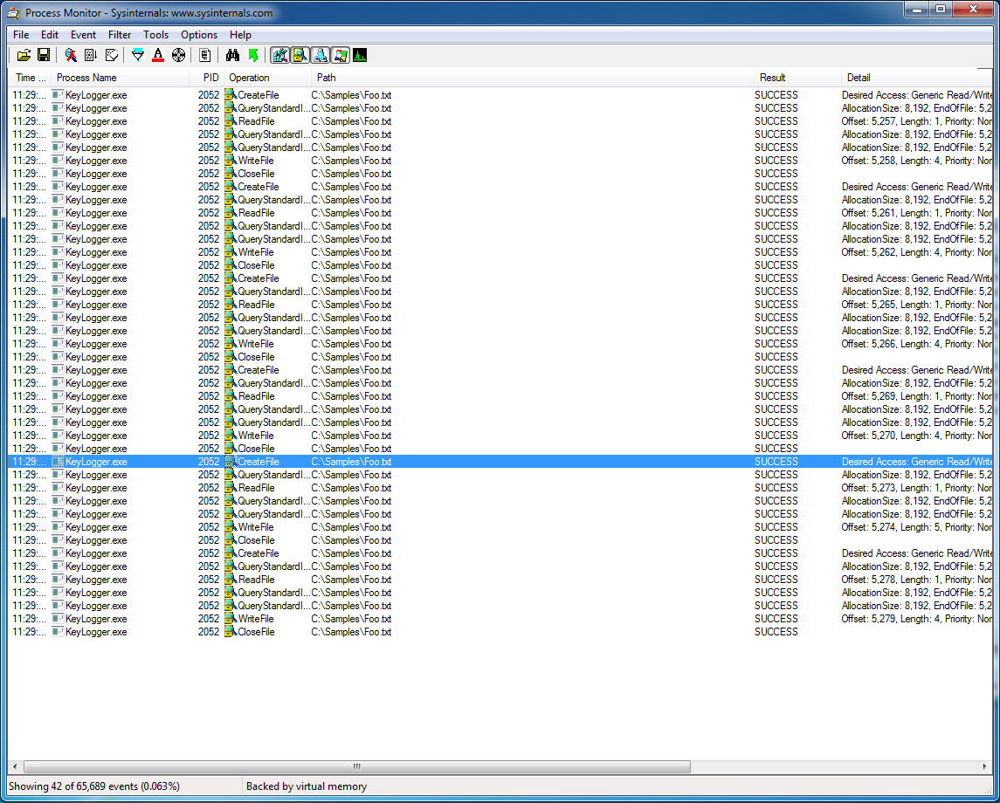
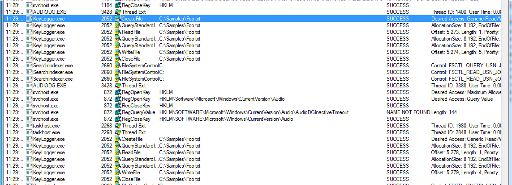

Malware Detection and Classification using Logistic Regression
Mon, 02 Apr 2018
Anti-Virus, Computer Science, Data Science, Machine Learning, Malware, Security, Windows
In this post, an approach to detecting malware using machine learning is presented. System call activity is processed and analyzed by a classification model to detect the presence of malicious applications.
Introduction
Traditional virus scanners use file
signatures to detect malware. When a file is scanned, its signature is computed and this signature is compared to a database of known malicious file signatures. If there is a match, the file is flagged as being malicious. However, this approach may fail to detect newly created malware; it depends upon having an up-to-date database of signatures. By using machine learning, malicious applications can be detected without the need for a database of signatures.
Applications use system calls to interact with the operating system. These calls provide details about what applications are doing. Now, operating system hooks allow for applications to intercept system calls on the system. These intercepted calls can be passively logged. Process Monitor is an application created by Windows Sysinternals that does just this. Process Monitor intercepts and logs system calls that are being made on the system. A screenshot of Process Monitor is shown in Figure 1. Process monitor is available
for download here.

Figure 1: Windows Sysinternals Process Monitor
The volume of information produced by Process Monitor can be overwhelming. Machine learning is applied to analyze these logs and detect anomalies. In this post, Process Monitor is used to generate data for the model. However, this process can be automated by installing hooks on the system and sending the data directly to the classifer.
Setup
A virtual machine running Windows 7 32-bit is created to collect training data. A keylogger is placed on the system. The keylogger intercepts key strokes using a hook installed with the system call
SetWindowsHookEx. The application then logs the VK code of each keystroke to a file. Logging samples are taken from the infected machine using Process Monitor. These logs are exported to a CSV file.

Figure 2: Keylogger Process Monitor Logs
Inspecting the log file, the calls to CreateFile and WriteFile made by the keylogging application can be seen. These logs are shown in Figure 2.
Training the Model
This training log file is read into pandas using
read_csv. Next the logs are grouped by process name and the individual fields are concatenated together. The following columns are used from the Process Monitor logs:
- Operation
- Path
- Result
- Detail
- Integrity
- Parent PID
- PID
Next, the logging calls are grouped into a blocks and the resulting strings are vectorized using a TfidfVectorizer. These vectors encode information about the number, type, and details of the system calls made on the computer. Tfidf vectorization is explained
in further detail in this earlier blog post.
The rational behind this approach is that malware uses system calls to operate on a system. For example, accessing or modifying files or registry keys. Sending or receiving data over the network. By analyzing the frequencies of these actions, malicious behavior can be detected.
Next the vectors are assigned target values. A value of 1 indicates the application is malicious. A value of 0 indicates the application is not.
A binary label is chosen, though, with sufficient data, programs could be grouped into types. Labels for common types of malware could be constructed: keylogger, Trojan, virus, etc.
Classification using Logistic Regression
Next, a logistic regression model is fit to the data. Logistic regression is a method of performing regression on a dataset that has categorical target values. The logistic function is used to transform linear combinations of the explanatory variables into probabilities. The definition of the logistic function is as follows:
\[\displaylines{\sigma(t)=\frac{1}{1+e^{-t}}}\]
Equation 1: The Logistic Function
This function is used to transform the typical linear regression formula:
\[\displaylines{f(x) = \beta_{0} + \beta_{1}x}\]
Equation 2: Linear Regression Equation
The resulting equation is shown in Equation 3. In this formula, \(p(x)\) represents the probability that an input sample belongs to the target \(1\). That is, the probably that an application is malicious given that it is making the observed system calls.
\[\displaylines{p(x)=\frac{1}{1+e^{-\beta_{0}-\beta_{1}x}}}\]
Equation 3: Logistic Regression
In this model, the target samples are the rows of a sparse matrix with a large number of columns. These columns encode the counts of all of the possible system calls, operations, paths, and results that can occur. Using sparse matrices improves the performance and memory consumption of the model. With sparse matrices, the runtime and memory usage is bound by the number of non-zero entries of the matrix and not the dimensions of the matrix.
Due to there only being 1 malicious application on the computer, the classes 0 and 1 are imbalanced. To improve the
recall of the classifier, the classes are assigned the following weights:
- Class 0: 0.1
- Class 1: 0.9
This weighting scheme increases the importance of samples in the target class 1.
Figure 3: Malware Detection System Flowchart
To summarize, system calls are intercepted and passed to a pre-processor. The pre-processed data is vectorized and the resulting matrix is provided as input to a logistic regression model. The model decides if the process making the system calls is malicious or not. Figure 3 describes the system at a high level using a flowchart.
Results
To test the model, another virtual machine is setup. Another keylogger is created which functions similarly to the first, with two main differences. The first difference is that the keylogger writes to a different log file. The second is that the keylogger is named differently.
Process Monitor logs are collected on the test machine. The logs are vectorized and target labels are predicted for the resulting samples. The accuracy of the model is evaluated. Samples belonging to the process
KeyLogger.exe should be assigned a label of 1, while other processes should be assigned a label of 0.
The
confusion matrix for the cross-validation data is shown below in Equation 4. The confusion matrix shows the true negatives, false positives, false negatives, and true positives from left to right and top to bottom.
\[\displaylines{\left(\begin{array}{cc}416&0\\1&97\end{array}\right)}\]
Equation 4: Classification Model Confusion Matrix
The overall accuracy of the model on this test data is:
\[\displaylines{(416 + 97) / (416 + 0 + 1 + 97) = 0.998054}\].
Next Steps
This post presents a proof-of-concept way to detect and classify malware using vectorization and logistic regression. This process can be improved by gathering Process Monitor logs for a large amount of malware. Malware can be assigned more detailed labels based on its category. Further, hooks can be installed which directly forward system call information to the model to remove the need for Process Monitor.
Disclaimer
Process Monitor is the property of Windows Sysinternals. The author is not in any way affiliated with Windows Sysinternals. The views of the author do not reflect those of Windows Sysinternals.
{kind=link}
{kind=link}
{kind=link}